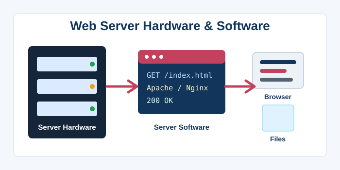
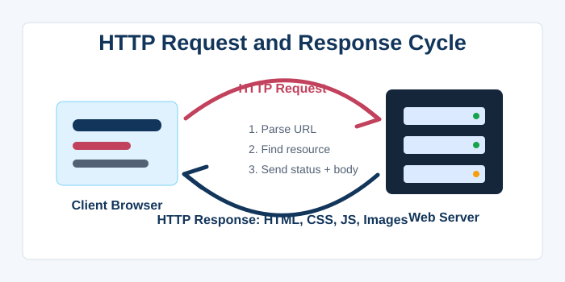
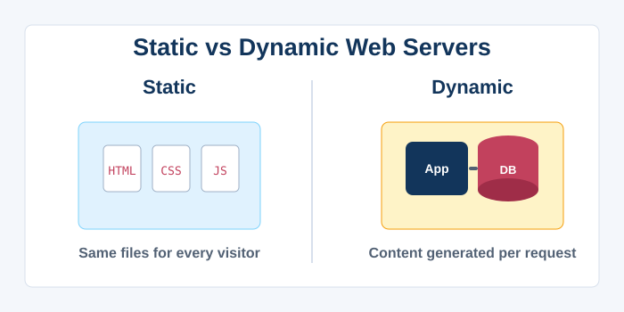
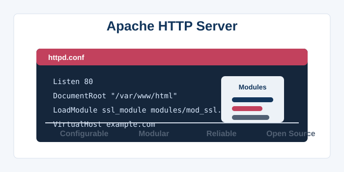
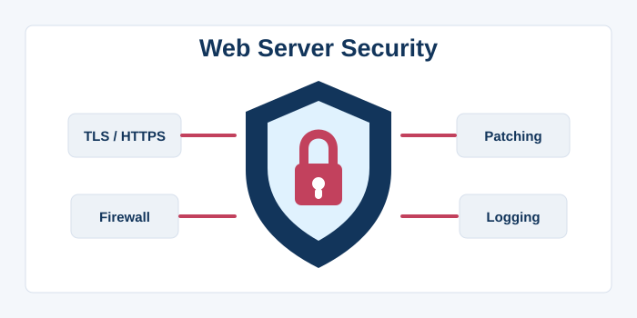
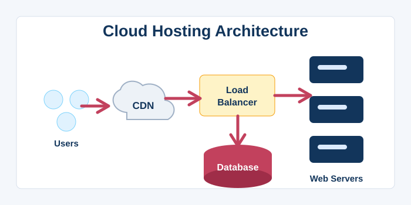
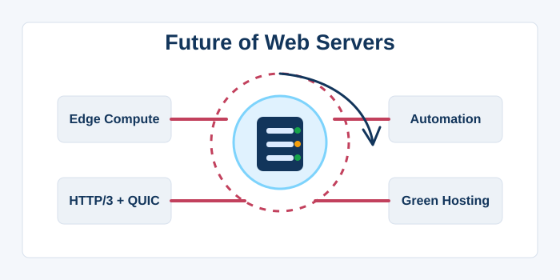

Web Servers
1. What is a Web Server?
A web server is a system—comprising both hardware and software—that stores, processes, and delivers web pages and associated resources to clients, typically web browsers, using the Hypertext Transfer Protocol (HTTP). The term can refer to the physical machine that hosts website files or to the server software (like Apache or Nginx) that listens for incoming requests. When a user enters a URL or clicks a link, the browser sends an HTTP request to the web server, which then retrieves the requested file (HTML, CSS, JavaScript, images) and sends it back as an HTTP response. Web servers are the backbone of the World Wide Web, making content accessible 24/7 to anyone with an internet connection. They handle many concurrent connections, often serving thousands of users simultaneously, using efficient event‑driven or multi‑threaded architectures. Static web servers serve pre‑existing files directly, while dynamic web servers generate content on the fly by executing server‑side scripts in languages like PHP, Python, or Node.js. Modern web servers also manage security through TLS/SSL encryption, enforce access controls, and log detailed request information for analytics and troubleshooting. Whether it’s a personal blog hosted on a Raspberry Pi or a massive e‑commerce platform running on a cluster of servers, the core function remains the same: reliably serve content over HTTP. The Apache HTTP Server, Nginx, Microsoft IIS, and LiteSpeed are among the most widely used web server software today. Without web servers, the internet would be a network without a voice, unable to deliver the rich, interactive experiences we take for granted.

2. How a Web Server Processes Requests
The lifecycle of an HTTP request begins when a client establishes a TCP connection to the server’s port (usually 80 or 443). The server’s listener accepts the connection and hands it off to a worker process or thread to handle the request. The client sends an HTTP request line (e.g., GET /index.html HTTP/1.1) along with headers; the server parses these to determine the desired resource and any conditions (like caching headers). If the request is for a static file, the server checks the file system for the resource; if found and permissions allow, it reads the file and includes it in the response body. For dynamic content, the server may forward the request to an application server or a language runtime (like PHP‑FPM or uWSGI) using protocols such as FastCGI or reverse proxying. The server then constructs an HTTP response, starting with a status code (200 OK, 404 Not Found, 500 Internal Server Error, etc.), adds response headers, and sends the content. Connection handling can be persistent (keep‑alive) to reduce TCP handshake overhead, allowing multiple requests over a single connection. Caching mechanisms at the server level, such as Varnish or built‑in page caches, can store generated responses to avoid redundant processing. Error handling is crucial: the server must gracefully manage malformed requests, timeouts, and resource exhaustion to maintain availability. Logging every request to access and error logs enables administrators to monitor performance, detect attacks, and debug issues. This entire process often completes in milliseconds, a testament to the efficiency of modern web server software.

3. Static vs. Dynamic Web Servers
Static web servers deliver files exactly as they are stored on disk, without any server‑side processing. These files—HTML pages, CSS stylesheets, images, and JavaScript—are the same for every visitor, making static servers extremely fast and efficient. Dynamic web servers, on the other hand, generate content at the time of request, often pulling data from a database, performing calculations, or personalising output for the user. Technologies like PHP, Python (Django/Flask), Ruby on Rails, Java (Spring), and Node.js run on the server side and produce HTML dynamically. Many web servers are hybrid, serving static assets directly while piping dynamic requests to an application server. This separation improves performance because static file serving consumes few resources and can be heavily cached, whereas dynamic generation is more CPU‑ and I/O‑intensive. Content Management Systems (CMS) like WordPress and Drupal are built on dynamic server models, where every page is assembled from templates and database content. The trend toward Jamstack (JavaScript, APIs, Markup) has blurred the lines further: static site generators pre‑build pages that are served as static files, but client‑side JavaScript fetches dynamic data from APIs. Dynamic servers also maintain session state via cookies, allowing logins and shopping carts across multiple requests. The choice between static and dynamic hosting depends on the site’s complexity, scalability needs, and update frequency. Ultimately, both types coexist to deliver the vast spectrum of web experiences.

4. Popular Web Server Software
Apache HTTP Server, released in 1995, is one of the oldest and most configurable web servers, powering a significant portion of the internet for decades. It uses a modular architecture, allowing administrators to load modules for SSL, URL rewriting, authentication, and more. Nginx (engine‑x), created by Igor Sysoev in 2002 to solve the C10k problem (handling 10,000 concurrent connections), quickly gained popularity for its event‑driven, asynchronous design and low memory footprint. Nginx excels as a reverse proxy, load balancer, and static file server, often placed in front of Apache or application servers. Microsoft Internet Information Services (IIS) is the proprietary web server built for Windows Server, tightly integrated with .NET and other Microsoft technologies. LiteSpeed is a commercial, drop‑in Apache replacement that offers superior performance and efficient handling of HTTP/2, HTTP/3, and QUIC. Caddy is a modern, open‑source server that automatically handles HTTPS via Let’s Encrypt and is written in Go, emphasising simplicity and security. Each server has its own configuration syntax and performance characteristics, and the choice often depends on the ecosystem (Linux vs. Windows), the workload profile, and the need for specific features. All major servers support virtual hosting, allowing multiple domains to be served from a single IP address using the Host header. The web server landscape continues to evolve with the adoption of cloud‑native deployments, where servers run in containers and are orchestrated by Kubernetes. Regardless of the software, the goal remains the same: serve content reliably, securely, and at scale.

5. Web Server Architecture and Concurrency
To handle multiple client connections simultaneously, web servers employ various concurrency models. Process‑based servers, like early Apache (pre‑fork), spawn a separate OS process for each connection, providing strong isolation but high memory overhead. Thread‑based models use a pool of threads within a single process, reducing resource consumption but requiring careful synchronisation. Event‑driven or asynchronous servers, epitomised by Nginx and Node.js’s built‑in server, use a single‑threaded event loop to handle thousands of connections concurrently, switching context only when data is ready. This model is extremely efficient for I/O‑bound workloads typical of web serving. Modern web servers often combine multiple approaches: a small number of worker processes, each running an event loop, to utilise multi‑core CPUs. Reverse proxies and load balancers distribute incoming requests across multiple backend server instances to achieve horizontal scalability. Sticky sessions (or session affinity) can route requests from the same client to the same backend to preserve session state. Connection pooling to databases and backend services prevents the overhead of establishing new connections for every request. The architecture also incorporates rate limiting and connection queuing to protect against traffic surges and DDoS attacks. Understanding these concurrency patterns is essential for tuning server performance and ensuring reliability under load. Thanks to advancements in asynchronous I/O and lightweight threads, a single modern server can handle millions of simultaneous long‑polling or WebSocket connections.
6. Security Practices for Web Servers
Securing a web server is a multi‑layered task that protects both the server and its users from a wide range of threats. The first line of defence is keeping all server software, including the operating system, web server, scripting languages, and libraries, up to date with security patches. Enforcing HTTPS via TLS certificates (from Let’s Encrypt or other CAs) encrypts data in transit, preventing eavesdropping and man‑in‑the‑middle attacks. Firewalls restrict access to only necessary ports (80 and 443), while intrusion detection systems monitor for suspicious activity. File permissions must be configured so that the web server process can read but not write to sensitive directories, and never execute uploaded files. Input validation at the server level helps prevent SQL injection, cross‑site scripting, and command injection attacks, complementing application‑layer defences. Rate limiting and WAF (Web Application Firewall) modules can block brute‑force login attempts and filter malicious payloads. Regular backups and an incident response plan ensure that a compromised server can be restored quickly. Disabling unnecessary modules and services reduces the attack surface (e.g., turning off directory listing, server signature, and TRACE methods). Server logs should be monitored for anomalies, but care must be taken to avoid logging sensitive data like passwords. Security headers (Content‑Security‑Policy, X‑Frame‑Options, etc.) are often enforced by the web server configuration. Ultimately, securing a web server is an ongoing process that requires vigilance, as new vulnerabilities are discovered daily.

7. Hosting and Deployment Environments
Web servers can be deployed in a variety of environments, from a single on‑premises physical machine to sprawling cloud‑based architectures. Shared hosting places multiple websites on a single server, with resources (CPU, RAM) partitioned per account; it’s economical but offers limited control. Virtual Private Servers (VPS) provide a virtualised environment with dedicated resources and root access, giving administrators full flexibility without the cost of dedicated hardware. Dedicated servers lease an entire physical machine to a single client, delivering maximum performance and isolation. Cloud hosting (AWS EC2, Google Cloud, Azure) offers virtual machines that can be scaled up or down on demand, with global data centres for low latency. Platform‑as‑a‑Service (PaaS) solutions like Heroku or Vercel abstract away server management, allowing developers to deploy code directly with automatic scaling. Containerisation via Docker packages web servers and their dependencies into portable units, orchestrated by Kubernetes for resilient, auto‑scaling deployments. Serverless architectures for web applications (e.g., AWS Lambda with API Gateway) eliminate the need to manage any web server at all, running code only when a request arrives. Content Delivery Networks (CDNs) such as Cloudflare and Akamai sit in front of web servers, caching content at edge locations worldwide to reduce load and improve speed. The choice of hosting environment depends on budget, technical expertise, traffic expectations, and compliance requirements. The modern trend is toward immutable infrastructure, where servers are never patched but replaced entirely from updated images.

8. The Future of Web Servers
Web servers are evolving rapidly to meet the demands of modern internet traffic, driven by protocols like HTTP/3 and QUIC, which offer faster connection setup and improved multiplexing. Edge computing moves server logic closer to the end user, running on CDN edge nodes to provide personalisation and authentication at the network edge with ultra‑low latency. WebAssembly on the server side (WASI) promises a secure, sandboxed runtime for executing compiled code from any language, potentially revolutionising how server‑side logic is deployed. Serverless and function‑as‑a‑service models are reshaping the concept of a “web server” into ephemeral functions triggered by events, reducing operational cost for variable workloads. Artificial intelligence is being integrated into servers for intelligent traffic management, anomaly detection, and automated scaling decisions. Green computing and energy efficiency are gaining focus, with efforts to reduce the carbon footprint of data centres and server hardware. The convergence of HTTP with other protocols (like WebTransport) may allow servers to handle low‑latency bidirectional streams for gaming and IoT directly. Microservices architecture breaks monolithic backends into small, independently deployable services, each with its own embedded web server, often managed by service meshes. Security enhancements like encrypted Client Hello (ECH) will prevent the leakage of server name indication, further protecting user privacy. As the web continues to grow, web servers will remain the silent workhorses, invisible yet essential to the digital ecosystem.
